OWASP
Prácticas Taller: OWASP - Contornos actualizados
Introdución
A OWASP (Open Web Application Security Project) é unha fundación sen ánimo de lucro dedicada a mellorar a seguridade do software. Naceu en 2001 e, desde entón, produce guías, ferramentas abertas e proxectos de referencia que son empregados por profesionais e organizacións de todo o mundo para desenvolver aplicacións máis seguras.
Un dos proxectos máis coñecidos é o OWASP Top 10, unha lista que se actualiza periodicamente e que recolle os dez riscos de seguridade máis relevantes en aplicacións web. O OWASP Top 10 serve como referencia de facto para concienciar desenvolvedores, equipos de seguridade e responsables técnicos sobre os problemas máis frecuentes e perigosos.
A versión actual é OWASP Top 10:2025, que inclúe:
- A01:2025 — Perda de control de acceso (Broken Access Control).
- A02:2025 — Configuración de seguridade incorrecta (Security Misconfiguration).
- A03:2025 — Fallos na cadea de subministración de software (Software Supply Chain Failures).
- A04:2025 — Fallos criptográficos (Cryptographic Failures).
- A05:2025 — Inxección (Injection).
- A06:2025 — Deseño inseguro (Insecure Design).
- A07:2025 — Fallos de autenticación (Authentication Failures).
- A08:2025 — Fallos na integridade do software ou dos datos (Software or Data Integrity Failures).
- A09:2025 — Fallos no rexistro e alerta de seguridade (Security Logging and Alerting Failures).
- A10:2025 — Xestión incorrecta de condicións excepcionais (Mishandling of Exceptional Conditions).
Traballar con laboratorios OWASP permite comprender, practicar e aprender a mitigar estas vulnerabilidades nun contorno seguro e controlado.
As máquinas como OWASP Broken Web Applications (BWA) levan anos sen actualizarse (última versión en 2015). Por iso, é recomendable usar contornos OWASP máis actuais, modernos e mantidos pola comunidade.
Alternativas actualizadas recomendadas
A continuación preséntanse tres plataformas OWASP activas para traballar vulnerabilidades OWASP Top 10 de forma práctica, segura e moderna.
1. OWASP Juice Shop
OWASP Juice Shop é unha aplicación web intencionadamente insegura escrita en Node.js, Express e Angular. Representa todas as vulnerabilidades OWASP Top 10 e moitas máis.
- Interface moderna e gamificada
- Retos ocultos con puntuación
- Preparada para Docker (Docker-ready)
Pódense publicar solucións?
Si, porque é un proxecto open-source baixo licenza MIT.
Incluso o propio proxecto ofrece unha sección oficial con Challenge solutions:
- GitHub do proxecto
- Guía oficial de axuda
- Pwning OWASP Juice Shop - Appendix - Solucións
Única excepción
Se estás a usar Juice Shop nun curso, exame ou CTF con regras propias, debes respectar esas normas antes de publicar.
Instalación con Docker nunha distribución Kali GNU/Linux:
Cheat Sheets Docker
Ligazóns de Interese: Cheat Sheets Docker
sudo apt update
sudo apt -y install docker.io docker-compose
sudo docker pull bkimminich/juice-shop
sudo docker run --rm -p 3000:3000 bkimminich/juice-shop
Logo accede no navegador a http://localhost:3000
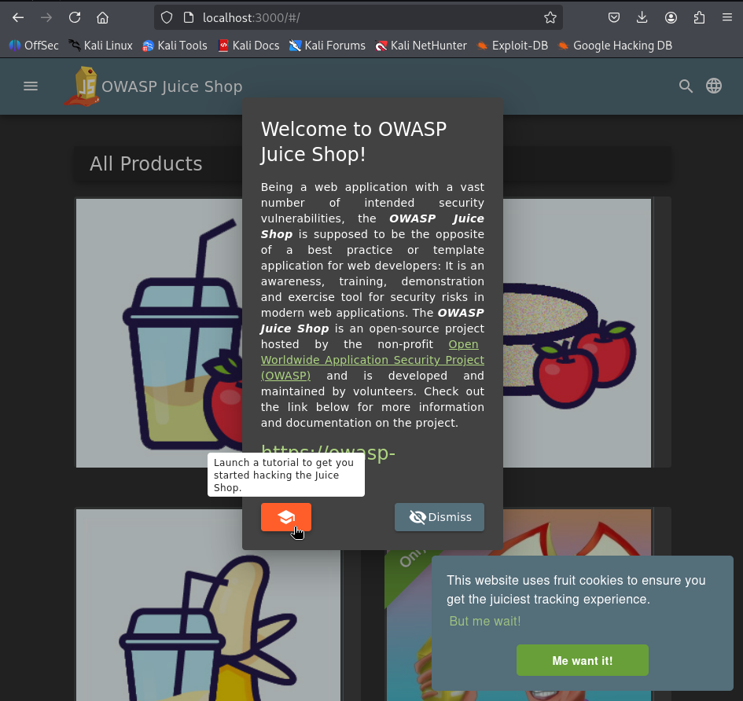
De interese
- Non necesita login por defecto.
- Moi útil en formacións prácticas e CTFs internos.
Comezar a resolver Desafíos
Acceder a guía oficial de retos para realizar os retos publicados.
2. OWASP WebGoat
WebGoat é unha aplicación educativa Java con explicacións integradas e prácticas guiadas paso a paso.
- Ofrece teoría e práctica con cada vulnerabilidade
- Mantida por OWASP
- Inclúe servidor backend e WebWolf para interaccións
Que é WebWolf?
WebWolf é unha aplicación complementaria de WebGoat que simula a “máquina do atacante” ou servizos externos cos que unha aplicación pode comunicarse. Permite realizar exercicios que requiren interacción cun sistema externo, como servir ficheiros ou recibir solicitudes de retorno (callbacks), sen saír da contorna de laboratorio.
Pódense publicar solucións?
Si. OWASP WebGoat é un proxecto de código aberto (open source) publicado baixo a licenza GNU GPL v2 ou posterior.
O proxecto está orientado á aprendizaxe e inclúe explicacións das vulnerabilidades, polo que poden publicarse resolucións documentadas (write-ups) ou guías paso a paso (walkthroughs), sempre que non existan regras específicas que o impidan.
Única excepción
Se se emprega WebGoat nun curso, exame ou CTF con regras propias, hai que respectar esas normas antes de publicar solucións.
Instalación con Docker nunha distribución Kali GNU/Linux:
Cheat Sheets Docker
Ligazóns de Interese: Cheat Sheets Docker
sudo apt update
sudo apt -y install docker.io docker-compose
sudo docker pull webgoat/webgoat-desktop
sudo docker run -p 127.0.0.1:3000:3000 --shm-size=1g \
-e PUID=$(id -u) -e PGID=$(id -g) \
-e TZ=Europe/Madrid \
webgoat/webgoat-desktop
Logo accede a http://localhost:3000
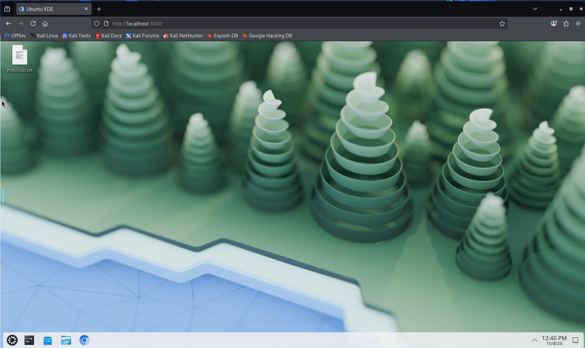
Lemos o contido do ficheiro WebGoat.txt, o cal indícanos como executar WebGoat:
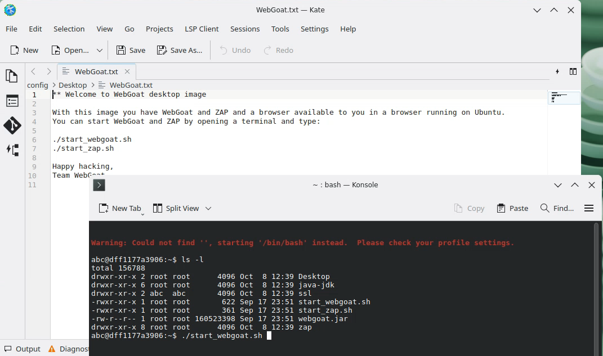
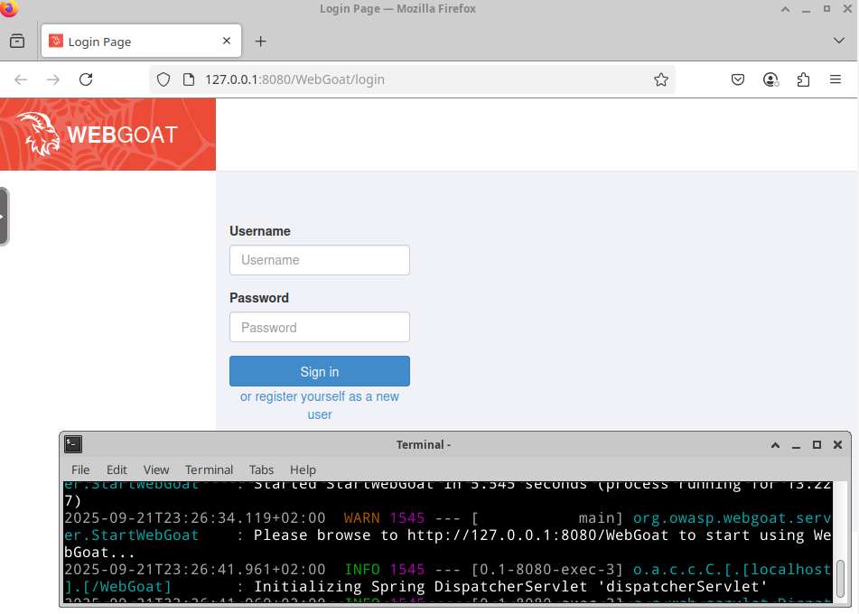
Tes que rexistrarte/crear unha conta para poder acceder ás leccións e retos (aparecen no panel esquerdo despois de iniciar sesión).
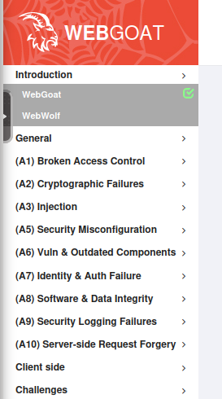
Conflicto de portos
- OWASP Juice Shop adoita levantarse en
http://localhost:3000(porto 3000). - OWASP WebGoat (desktop) tamén adoita levantarse en
http://localhost:3000(porto 3000).
Isto significa que os dous colisionan no mesmo porto: só un pode escoitar en:3000á vez.
Se se quere executalos ao mesmo tempo débese cambiar o porto externo ao lanzar un deles. Por exemplo:
# Juice Shop en :3000
docker run --rm -p 3000:3000 bkimminich/juice-shop
# WebGoat en :9090
docker run --rm -p 127.0.0.1:9090:3000 webgoat/webgoat-desktop
Así, accederíase a:
- Juice Shop → http://localhost:3000
- WebGoat Desktop → http://localhost:9090
⚠️ Recomendación: escoller sempre portos distintos (3000, 9090, etc.) para evitar conflitos cando uses varios laboratorios OWASP en paralelo.
3. OWASP Security Shepherd
Security Shepherd é unha plataforma CTF con múltiples retos de seguridade web. O seu obxectivo é ensinar tanto a explotación como a mitigación de vulnerabilidades.
- Permite crear competicións por equipos
- Retos desde nivel básico ata avanzado
- Multitude de escenarios reais
Instalación mediante Docker Compose nunha distribución Kali GNU/Linux:
Cheat Sheets Docker
Ligazóns de interese: Cheat Sheets Docker
Seguir o procedemento do repositorio oficial de OWASP Security Shepherd. Para facer a práctica máis estable fronte aos cambios de versión de Kali Rolling, non se instala Java nin Maven directamente no sistema anfitrión. A construción de Security Shepherd faise dentro dun contedor que xa inclúe Maven 3.9 + Eclipse Temurin JDK 17.
Deste xeito, Kali só necesita Git, Docker e Docker Compose, evitando depender da versión de OpenJDK dispoñible nos repositorios de Kali en cada momento.
- Instalar os requisitos no sistema anfitrión:
- Clonar o repositorio oficial:
- Construír Security Shepherd empregando Maven e Java 17 dentro dun contedor:
sudo docker run --rm \
--user "$(id -u):$(id -g)" \
-e MAVEN_CONFIG=/tmp/.m2 \
-v "$PWD":/workspace \
-w /workspace \
maven:3.9-eclipse-temurin-17 \
mvn -Pdocker clean install -DskipTests -B
Por que empregar Maven e Java dentro de Docker?
Esta solución desacopla a práctica da versión de Java dispoñible en Kali Rolling. A máquina anfitrioa só precisa Docker, mentres que a versión de Java empregada para compilar Security Shepherd queda fixada no contedor.
- Levantar os servizos:
Docker Compose
Se a instalación emprega o comando clásico, usa:
- Comprobar os contedores e os portos publicados:
Unha vez levantados os servizos, consulta na saída de Docker Compose os portos publicados polo ficheiro oficial e accede á interface web correspondente.
Configuración inicial
Se a aplicación solicita datos de configuración inicial ou credenciais xeradas polo contedor, podes revisar o ficheiro de autenticación desde o contedor de Security Shepherd. O nome exacto do contedor pode variar segundo a versión ou o ficheiro Compose empregado.
Accedemos á páxina de Login https://localhost:
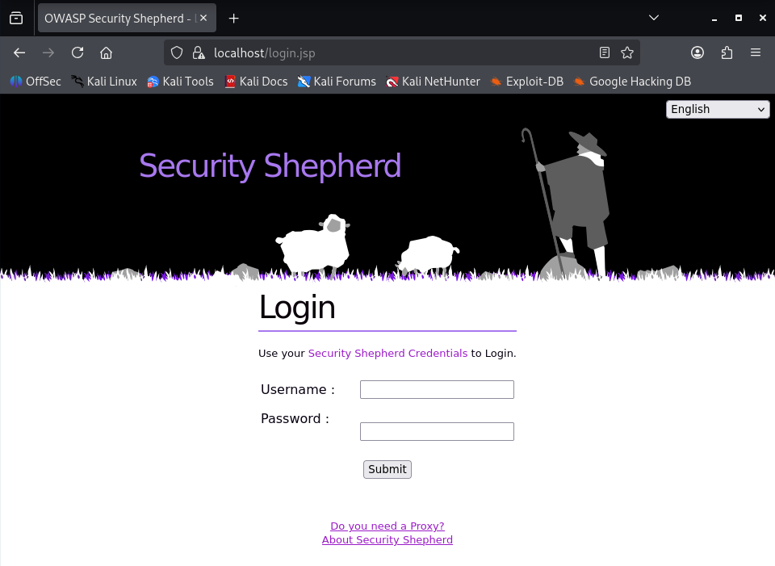
Accedemos coas contrasinais por defecto: admin/password e cambiamos o contrasinal:
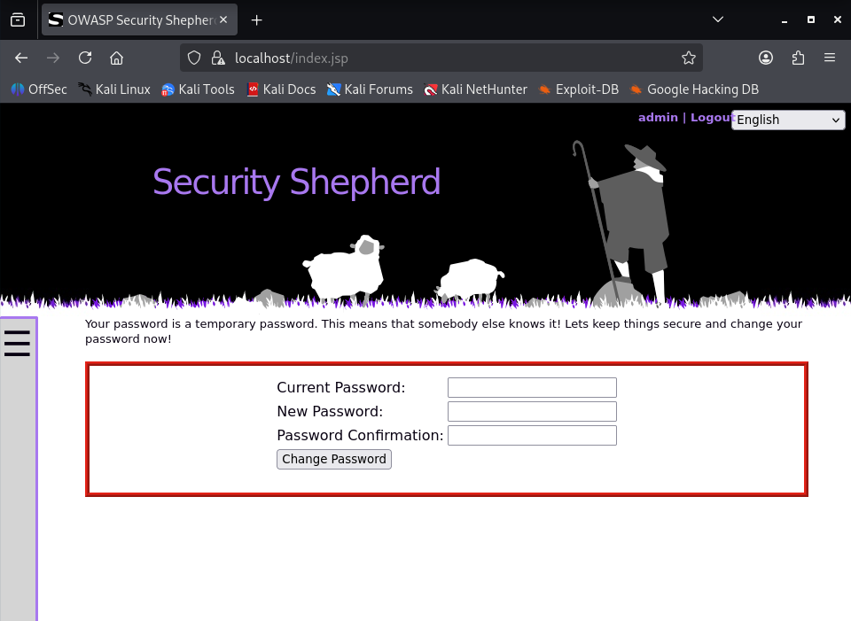
Xa podemos comezar a realizar os retos (challenges):
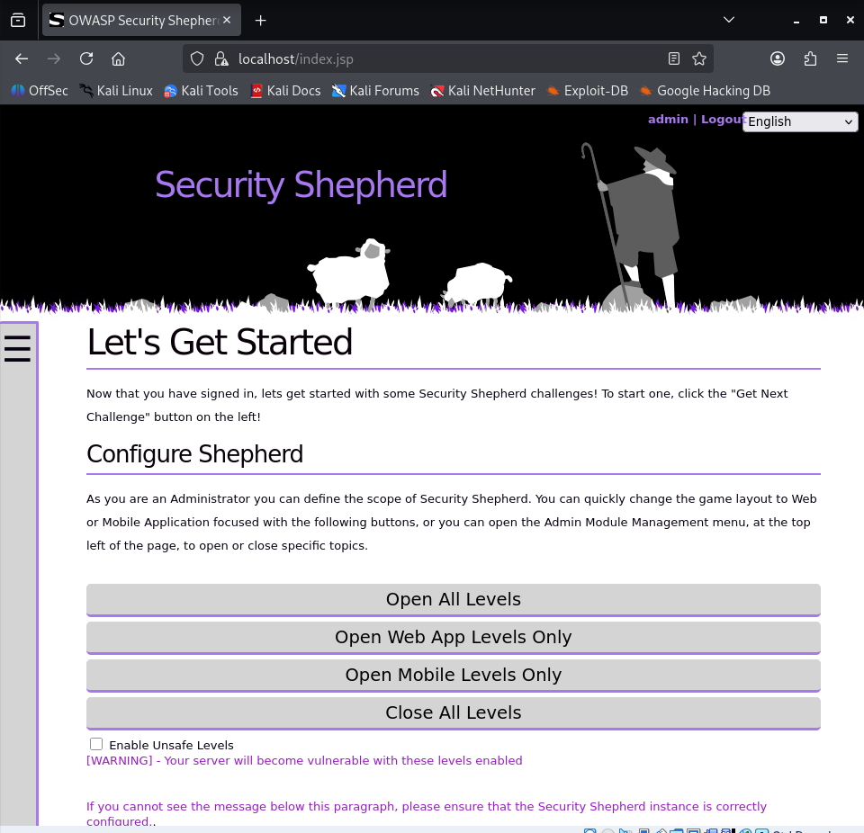
Picamos en Open Web App Levels Only e abrimos soamente os retos Web:
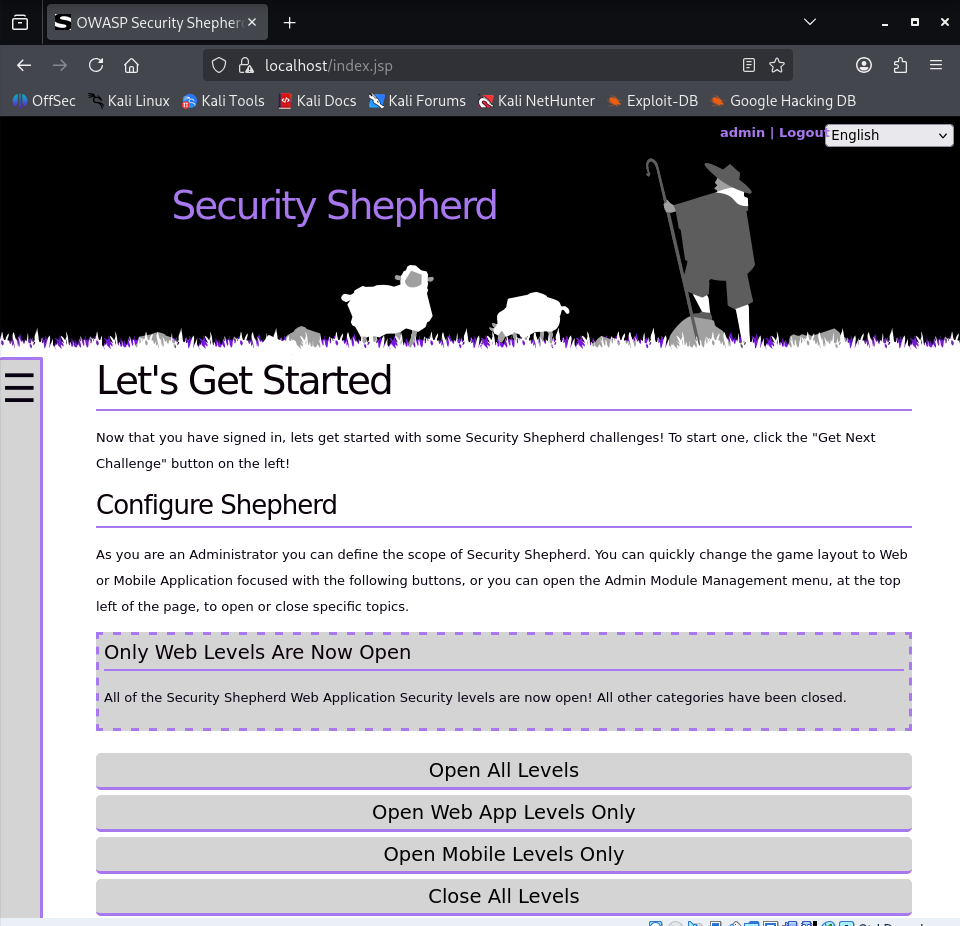
Amósansenos os niveis/retos web dispoñibles para resolver:
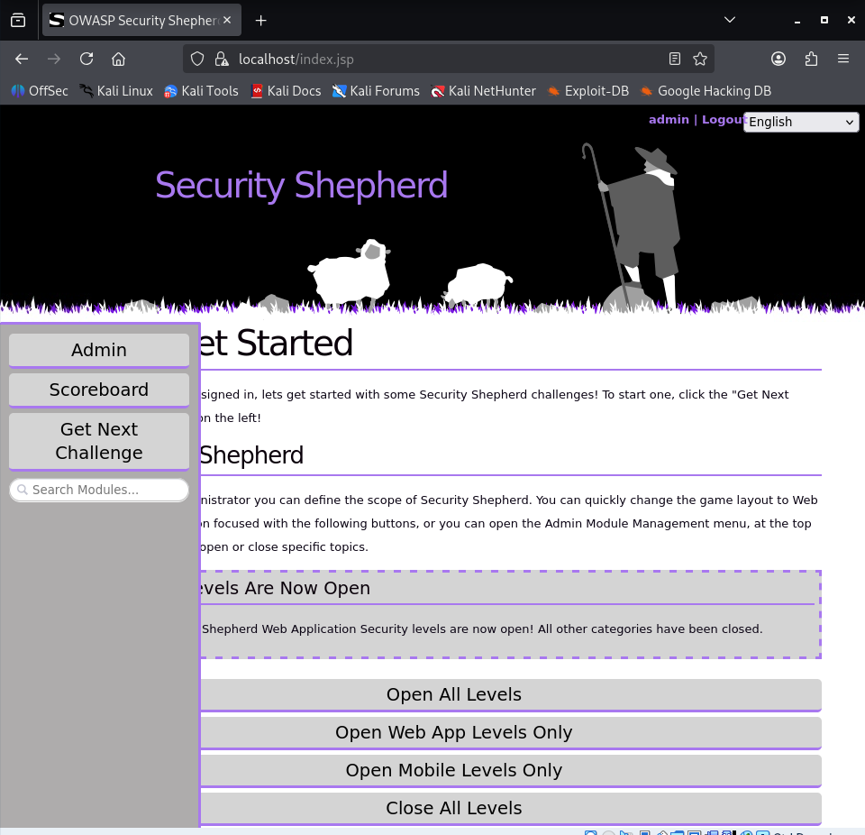
Picamos en Get Next Challengue e aparécenos o primeiro reto:
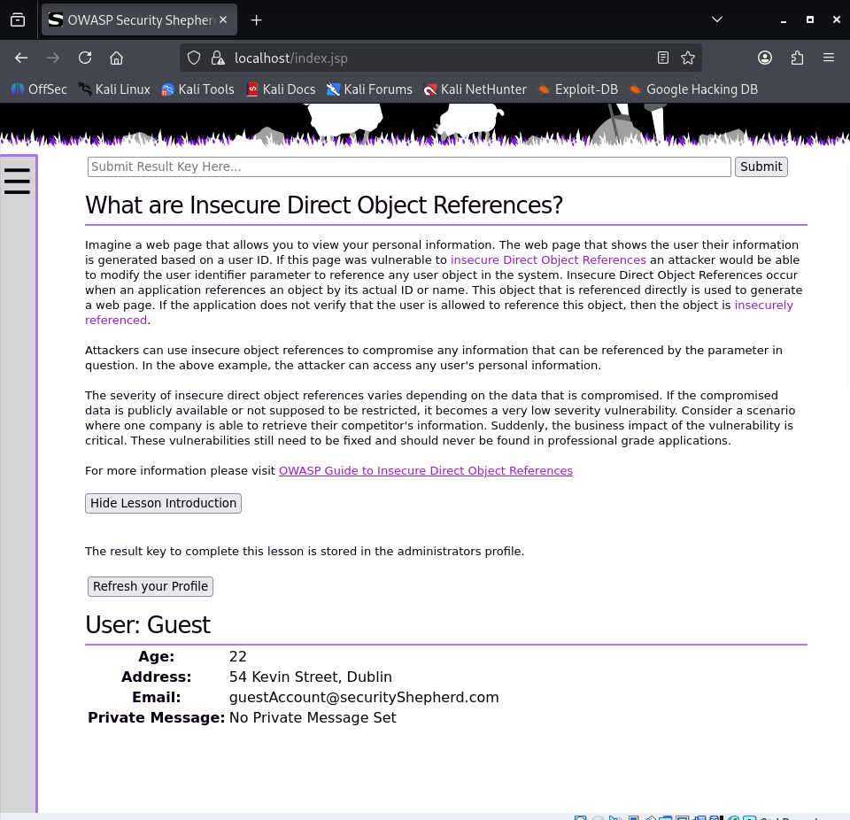
Arrancamos Burp Suite, interceptamos a comunicación e cambiamos guest por admin. Copiamos a key e cubrímola no campo Submit
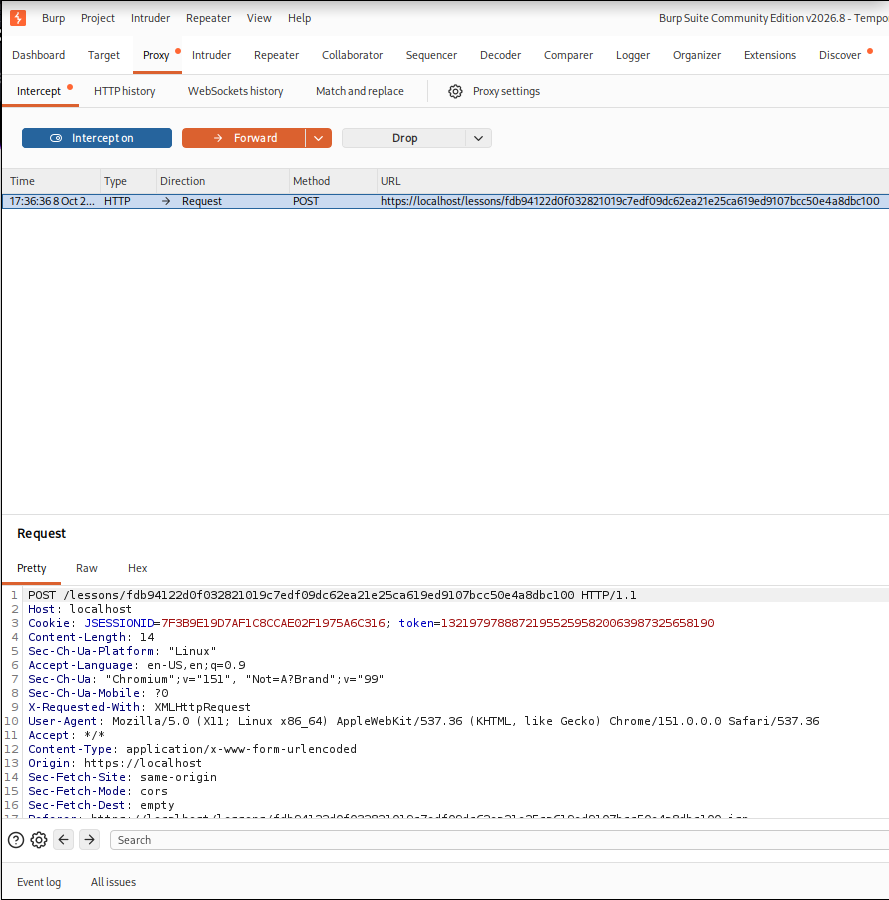
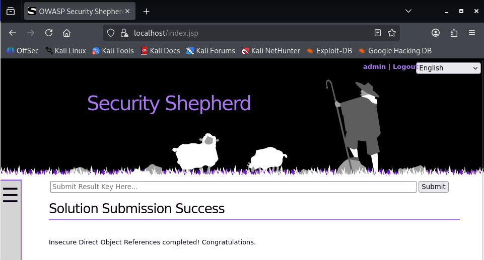
Pódense publicar solucións?
Si. OWASP Security Shepherd é un proxecto de código aberto (open source) publicado baixo a licenza GNU GPL v3.0.
O proxecto está deseñado como plataforma de aprendizaxe e competición (CTF), polo que poden publicarse resolucións documentadas (write-ups) ou guías paso a paso (walkthroughs), salvo que existan regras específicas do curso, exame ou competición que o impidan.
Única excepción
Se Security Shepherd se emprega dentro dun curso, exame ou CTF con regras propias, hai que respectar esas normas antes de publicar solucións.
Comparativa rápida
| Plataforma | Linguaxe | Dificultade | Docker | Contido guiado | Ideal para |
|---|---|---|---|---|---|
| Juice Shop | Node.js | Media-Alta | ✅ | ❌ | Gamificación |
| WebGoat | Java | Media | ✅ | ✅ | Formación |
| Security Shepherd | Java/PHP | Media-Alta | ✅ | ✅ | Competicións |
Estas plataformas substitúen e superan OWASP BWA, permitindo traballar nun contorno actualizado, portátil e seguro.